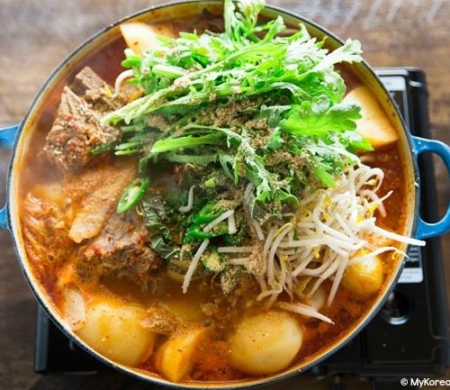

Gamjatang

Description
Gamjatang is soup made with pork neck bones and vegetables. Sizzling hot gamjatang is hearty and savory which makes it always popular at the dinner table. The soft fatty meat picked from the gaps between the bones is especially tasty. The fully cooked cabbage and bean sprouts in the stock turn soft yet retain a crispy texture. Gamjatang makes a perfect, satisfying meal when paired with a bowl of rice.
Ingredients
- 2½ to 3 pounds of pork neck bones (or spine bones)
- 1 ounce ginger, sliced
- 2 tablespoons doenjang (Korean fermented bean paste)
- 2 dried SHiitake mushrooms
- 1 medium onion, sliced
- 1 large dried red chili pepper (or a few red chili peppers)
- 1 pound of napa cabbage, cut off the core
- 2 or 3 medium potatoes, peeled
- 8 ounces soybean sprouts, washed and strained
- 4 green onions, washed and cut into 2 inches long
- 1 green onion, chopped for garnish
- 8 to 12 perilla leaves, washed
- 6 garlic cloves, minced
- 3 tablespoons gochugaru (Korean hot pepper flakes)
- 3 tablespoons fish sauce
- ¼ cup deulkkae-garu (perilla seeds powder)
- ½ teaspoon ground black pepper
- 1/2 cup water
Steps
- Rinse the pork bones a couple of times and soak in cold water for at least 30 minutes.
- Bring a large pot of water to a boil. Blanch the cabbage for 1 minute and then take it out with tongs.
- Keep the hot water boiling, we’ll use it later for blanching pork bones.
- Rinse the cabbage in cold water and strain. Tear the leaves in lengthwise once or twice to make it long bite sized pieces.
- Put the bones into the boiling water and cover. Let them cook for 7 minutes over medium high heat. The water will turn dark and some foam will come to the surface.
- Strain the bones and wash each one in cold running water to remove any extra fat, dark foamy stuff, and bone fragments. Put the cleaned bones into a large pot.
- Add ginger, soy bean paste, dried shiitake mushrooms, onion, dried red pepper, and 11 cups of water. Cover and cook for 90 minutes over medium high heat.
While it cooks, make the seasoning paste
- Combine garlic, hot pepper flakes, hot pepper paste, fish sauce, perilla seeds powder, ground black pepper, and ¼ cup water in a bowl.
- Mix well until creamy.
Finish
- 90 minutes later, open the pot. Take out the 2 shiitake mushrooms and put them on your cutting board. Add the cabbage, soy bean sprouts, 3 green onions, and the peeled potatoes.
- Slice the mushrooms thinly and put them back to the pot. Add the seasoning paste. Add ¼ cup water and cover.
- Cook for 30 to 40 minutes over medium high heat until the potatoes are fully cooked. Test them by poking one with a chopstick or a bamboo skewer. If the chopstick goes through easily, it’s fully cooked.
- Add the perilla leaves and stir. You can serve right away with rice and a few more side dishes.